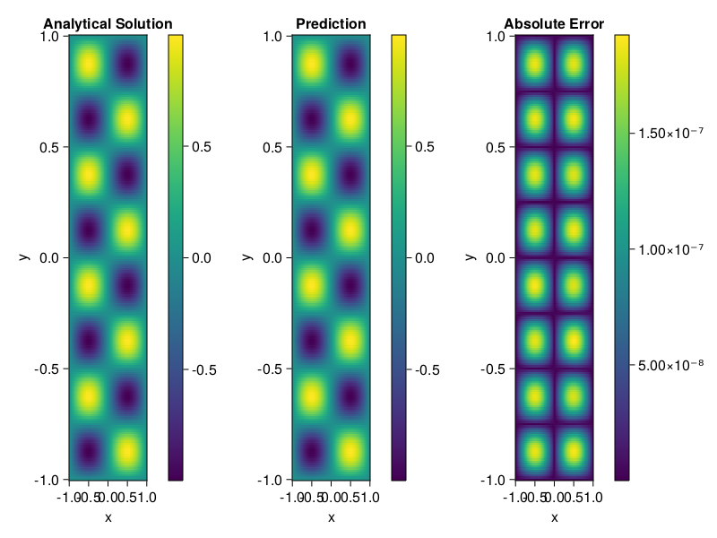

Helmholtz equation
Let us consider the Helmholtz equation in two space dimensions
\[\begin{aligned} &\Delta u(x, y)+k^{2} u(x, y)=q(x, y), \quad(x, y) \in \Omega:=(-1,1)^2 \\ &u(x, y)=0, \quad(x, y) \in \partial \Omega \end{aligned}\]
where
\[q(x, y)=-\left(a_{1} \pi\right)^{2} \sin \left(a_{1} \pi x\right) \sin \left(a_{2} \pi y\right)-\left(a_{2} \pi\right)^{2} \sin \left(a_{1} \pi x\right) \sin \left(a_{2} \pi y\right)+k^{2} \sin \left(a_{1} \pi x\right) \sin \left(a_{2} \pi y\right).\]
The excat solution is $u(x,y)=\sin{a_1\pi x}\sin{a_2\pi y}$. We chose $k=1, a_1 = 1$ and $a_2 = 4$.
using ModelingToolkit, IntervalSets, Sophon, Lux
using Optimization, OptimizationOptimJL
@parameters x,y
@variables u(..)
Dxx = Differential(x)^2
Dyy = Differential(y)^2
a1 = 1
a2 = 4
k = 1
q(x,y) = -(a1*π)^2 * sin(a1*π*x) * sin(a2*π*y) - (a2*π)^2 * sin(a1*π*x) * sin(a2*π*y) + k^2 * sin(a1*π*x) * sin(a2*π*y)
eq = Dxx(u(x,y)) + Dyy(u(x,y)) + k^2 * u(x,y) ~ q(x,y)
domains = [x ∈ Interval(-1,1), y ∈ Interval(-1,1)]
bcs = [u(-1,y) ~ 0, u(1,y) ~ 0, u(x, -1) ~ 0, u(x, 1) ~ 0]
@named helmholtz = PDESystem(eq, bcs, domains, [x,y], [u(x,y)])\[ \begin{align} \frac{\mathrm{d}}{\mathrm{d}y} \frac{\mathrm{d}}{\mathrm{d}y} u\left( x, y \right) + \frac{\mathrm{d}}{\mathrm{d}x} \frac{\mathrm{d}}{\mathrm{d}x} u\left( x, y \right) + u\left( x, y \right) =& - 166.78 \sin\left( 3.1416 x \right) \sin\left( 12.566 y \right) \end{align} \]
Note that the boundary conditions are compatible with periocity, which allows us to apply BACON.
chain = BACON(2, 1, 5, 2; hidden_dims = 32, num_layers=5)
pinn = PINN(chain) # call `gpu` on it if you want to use gpu
sampler = QuasiRandomSampler(300, 100)
strategy = NonAdaptiveTraining()
prob = Sophon.discretize(helmholtz, pinn, sampler, strategy)
@time res = Optimization.solve(prob, BFGS(); maxiters=1000)u: ComponentVector{Float64}(filters = (filter_1 = (bias = [-0.08827552816670556; 0.8299379128267391; … ; 0.03085794617958326; -0.7577337089526658;;]), filter_2 = (bias = [0.2039266961684795; -0.5475174678711862; … ; -0.2246901365120162; -0.0667056581311745;;]), filter_3 = (bias = [-0.7918467811514724; -0.06956622437125017; … ; -0.8601700362069966; 0.015514616079929312;;]), filter_4 = (bias = [-0.26338325937801954; 0.07320167471521946; … ; 0.4830559827378048; -0.7629608138251195;;]), filter_5 = (bias = [0.2508502249663542; -0.4150802869303221; … ; 0.5818885402039479; 0.657851358297733;;])), linear_layers = (layer_1 = (weight = [-0.12510435433337858 0.2508519653927315 … 0.08769367686067034 0.08100662319591873; 0.33603798454527367 0.26642607701405396 … -0.10759520917910602 0.16782681261686655; … ; 0.505375873909768 0.2620613474631365 … -0.03166134927947223 -0.2469764865938041; 0.37387686780285506 0.3065053729272576 … 0.29568293039837806 0.2916007511587499], bias = [0.005266631505688256; -0.010898240167479853; … ; 0.017987201714224185; -0.0038922743362374335;;]), layer_2 = (weight = [-0.4317630304854668 -0.12039895900565387 … -0.19448558091738136 0.41575188141611485; 0.3660743465277425 -0.02263835070965005 … 0.0589639413073257 -0.17214923693995218; … ; 0.1729746858148388 0.161374585233735 … 0.017320317663288152 -0.09866204049820028; -0.07750934630779761 0.10670234329461116 … -0.04606997470971047 -0.42802668819347484], bias = [0.004502760248915472; 0.002038426154693401; … ; -0.013267208235641807; 0.004440656531154524;;]), layer_3 = (weight = [-0.09510488395759242 -0.40162100895625397 … -0.16113204682127275 -0.20706023817244468; -0.3999238160972683 0.10751268214377382 … 0.36176240677290084 -0.11442994305194436; … ; 0.11968017276610098 -0.14559885348365 … 0.13033759177653265 0.3252590472214603; -0.18808240420377006 -0.3510849498478771 … 0.4335148612820772 -0.13026864474156913], bias = [0.0005184788319605003; 0.0029345863596000232; … ; 0.007467103846165873; 0.015643779616934087;;]), layer_4 = (weight = [-0.40616716046502366 0.2762692978053138 … -0.2870608955514025 -0.4098729080113262; 0.27639643927244256 0.3246375626847669 … 0.009310472141324924 0.37116570961831696; … ; 0.2834884265385236 -0.1153034195199049 … 0.05113087816891772 -0.17844929582528346; -0.28554624926704936 0.03209885401303178 … 0.18163210712888317 -0.10660820675560305], bias = [0.005247714215445476; -0.0024248626518112476; … ; 0.005765013006238559; -0.008646164124200165;;])), output_layer = (weight = [0.05389284155503755 -0.020938825045897357 … -0.07048260928808012 -0.20978030786025903], bias = [0.04813241202279488;;]))Let's plot the result.
phi = pinn.phi
xs, ys= [infimum(d.domain):0.01:supremum(d.domain) for d in domains]
u_analytic(x,y) = sinpi(a1*x)*sinpi(a2*y)
u_real = [u_analytic(x,y) for x in xs, y in ys]
phi_cpu = cpu(phi) # in case you are using GPU
ps_cpu = cpu(res.u)
u_pred = [sum(phi_cpu(([x,y]), ps_cpu)) for x in xs, y in ys]
using CairoMakie
axis = (xlabel="x", ylabel="y", title="Analytical Solution")
fig, ax1, hm1 = heatmap(xs, ys, u_real, axis=axis)
Colorbar(fig[:, end+1], hm1)
ax2, hm2= heatmap(fig[1, end+1], xs, ys, u_pred, axis= merge(axis, (;title = "Prediction")))
Colorbar(fig[:, end+1], hm2)
ax3, hm3 = heatmap(fig[1, end+1], xs, ys, abs.(u_pred-u_real), axis= merge(axis, (;title = "Absolute Error")))
Colorbar(fig[:, end+1], hm3)
fig